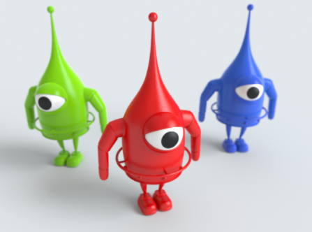
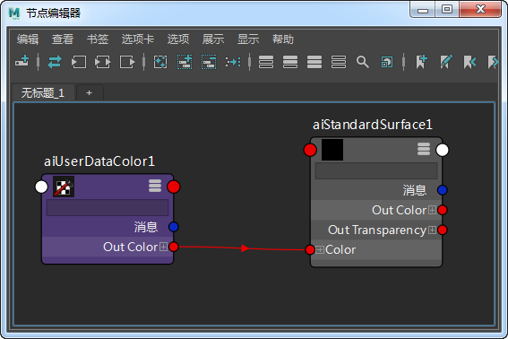
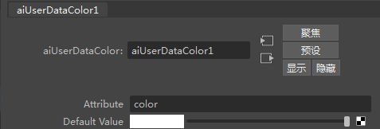
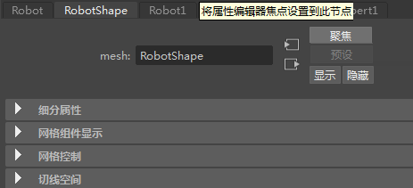
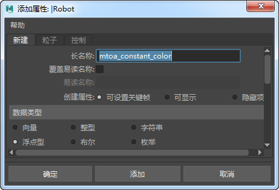
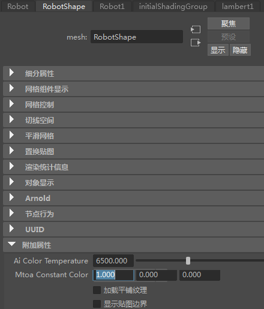
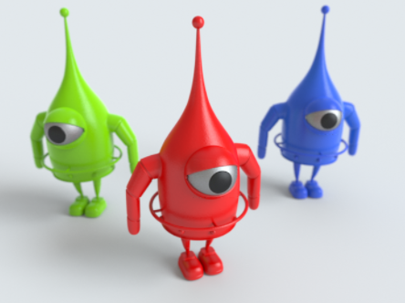
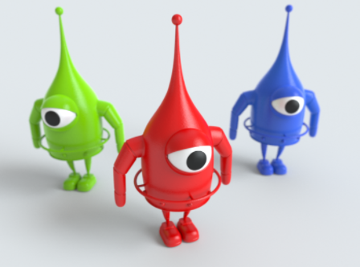

Ai 用户数据颜色
| 延伸阅读 |
| 有关完整的着色器文档，请参见《Arnold 用户手册》中的用户数据着色器。 |

由一个 Ai 用户数据颜色着色器驱动不同的彩色模型
本简短教程介绍如何使用 Ai 用户数据颜色着色器将一个具有不同颜色的着色器指定给场景中的三个模型。
要下载对应的场景，请单击此处。
- 在这个场景中，有三个机器人模型。我们希望为这三个模型分别指定红色、蓝色和绿色。首先，选择所有三个机器人，然后为它们指定一个 Ai 标准曲面着色器。
为所有机器人指定了一个着色器
- 创建一个 Ai 用户数据颜色*着色器，并将它连接到 standard_surface 着色器的 *base_color 属性。

- 选择该 Ai 用户数据颜色着色器，并在“颜色属性名称”(Color Attr Name)旁的文本字段中键入“color”。

- 选择一个机器人。为其添加属性。请确保选择机器人的形状节点，以便正确添加属性。要执行此操作，请在选择机器人几何体的情况下按属性编辑器中的“聚焦”(Focus)按钮。

选择“聚焦”(Focus)按钮以选择机器人模型的形状节点
添加属性(Add Attribute)
- 将属性添加到机器人的形状几何体节点（“属性 > 添加属性”(Attributes > Add Attribute)）。在“长名称”(Long name)旁的字段中键入“mtoa_constant_color”。请注意，长名称只能使用小写字母。大写字母不起作用。将“数据类型”(Data Type)更改为“向量”(Vector)。这有助于我们更改 Ai 标准曲面着色器的颜色输出的 RGB 值。

添加“mtoa_constant_color”名称并将“数据类型”(Data Type)更改为“向量”(Vector)
- 在选择机器人形状节点的情况下，打开属性编辑器底部的“附加属性”(Extra Attributes)。这时应看到新的“Mtoa 恒定颜色”(Mtoa Constant Color)属性，且该属性有三个向量字段，分别对应每个 RGB 通道。

- 将第一个“Mtoa 恒定颜色”(Mtoa Constant Color)更改为 1，然后渲染场景。这时应看到机器人颜色已更改为红色，因为我们已经为“Mtoa 恒定颜色”(Mtoa Constant Color)的“R”字段添加了 1。
- 要更改其他机器人的颜色，请重复上述过程。但是，在 Ai 用户数据颜色着色器中，请将一个机器人的 R 字段更改为 1，将第二个机器人的 G 字段更改为 1，并将第三个机器人的 B 字段更改为 1。这时应看到如下图所示的场景：

带有金属眼睛的 RGB 机器人
默认值(Default Value)
- 我们还可以为眼球使用同样的着色器。如果我们将“Ai 用户数据颜色”(Ai UserData Color)着色器的“默认值”(Default Value)更改为白色，眼球将变成白色，这是因为我们还未向眼球的形状节点添加“Mtoa 恒定颜色”(Mtoa Constant Color)属性。它会在分配了 Ai 标准曲面着色器（且该着色器连接了 Ai 用户数据颜色着色器）的任何对象上将颜色更改为白色（您也可以将着色器拖放到此属性上）。
将 default_value 颜色更改为白色或用鼠标中键将白色着色器拖动到此属性

眼球的 default_value 已更改为白色